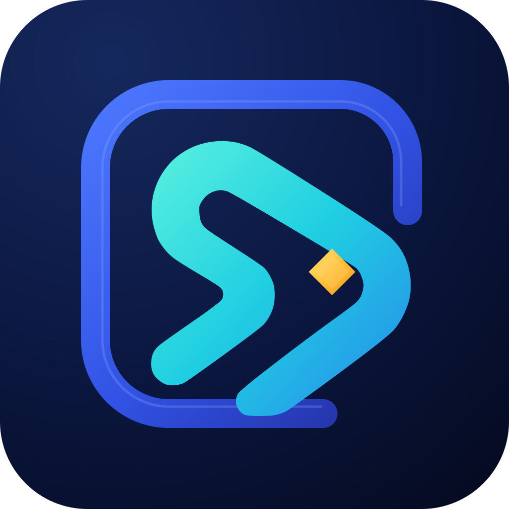

Panes that survive restarts
Layout, cwd, and scrollback live in Herdr, not in the window. Quit, reopen, continue.

Shardlane v0.1.13 · arm64Native macOS workspace for coding agents
Shardlane projects the Herdr runtime into a fast native interface built on GPUI and libghostty-vt. Herdr stays the authority over sessions and state; Shardlane is the client you actually touch.
$ wax install herdr · the app offers this on first run if the runtime is missing
$ herdr attach shardlane
✓ claude refactor mux adapter · 42.3s
▸ codex cargo test --workspace
$ cargo test --locked --workspace
test result: ok. 214 passed; 0 failed
51.82s · 3 targets
v0.1.13macOS 14+Apple Siliconad-hoc signedSHA-256 publishedGPLv3
Herdr owns workspaces, tabs, panes, sessions, scrollback, and persistence. libghostty-vt owns terminal semantics. Shardlane owns the native shell: presentation, navigation, and taste.
Missing capabilities are fixed at the Herdr boundary, never as a parallel runtime inside the client. That single rule keeps the app small, honest, and fast. Read the architecture.
Herdr APIlibghostty-vtgpui-componentShardlane shell
Layout, cwd, and scrollback live in Herdr, not in the window. Quit, reopen, continue.
Launch agents, watch them work in live sessions, browse conversation history, resume with full context. Semantic operations, never keystrokes into a PTY.
herdr agent resume --session 4f2e
Rendered with GPUI. No Electron, no telemetry, no cloud accounts.
Every past coding-agent conversation, indexed and searchable in place.
An optional hosted Mobile Web bundle, served by the Host Remote API.
GPLv3. The whole workspace is source you can read, build, and change.
Browse the sourceShardlane-macos-aarch64.zip from the latest release.
shasum -a 256 -c Shardlane-macos-aarch64.zip.sha256
Unzip, drag Shardlane.app to Applications.
Right-click the app, choose Open once. Ad-hoc signed, not notarized.